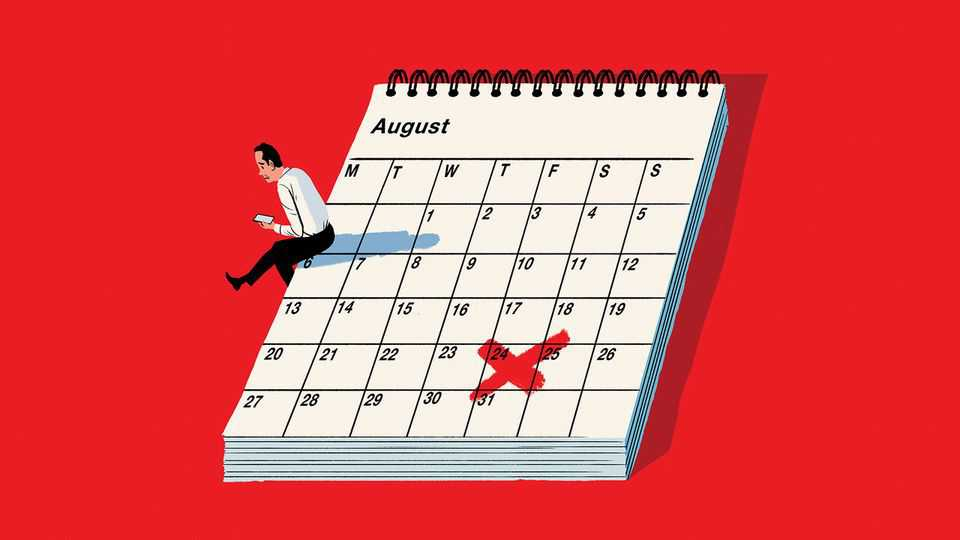

The delights of deadlines
A friend to procrastinators, an enemy to prattlers, a necessity for managers

Jul 30th 2026
The connection between deadlines and journalism is obvious: this column would never have been written without one. But deadlines are critical to every organisation. They are an antidote to procrastination. They deal with the problem of diminishing returns. And they set the rhythm of a workplace, co-ordinating the activities of many teams and individuals.
First, procrastination. The tendency to put things off for no good reason is a fundamental part of the human condition. Hesiod, an ancient Greek poet, warned that idlers were liable never to fill their barns. A paper written about 2,700 years later, by Brenda Nguyen of the University of Lethbridge and her co-authors, finds that things have not changed much since (besides the barns). In a survey of some 22,000 individuals, they find that a disposition to procrastination is associated with lower incomes and reduced employment.
In another paper, Piers Steel of the University of Calgary and his co-authors examined the behaviour of arbitrators in workplace-grievance procedures in Canada. Arbitrators have a lot of control when it comes to writing their decisions: they can, in effect, set their own timetables. They are also expected to act swiftly to settle cases. Arbitrators who scored one standard deviation above the mean for self-reported procrastination took 83 days to write decisions, compared with 26 days for those one standard deviation below the mean.
People have various techniques for rousing themselves to action. A study by Hengchen Dai of the University of California, Los Angeles, and her colleagues analysed a website on which people undertake to achieve certain goals. They found that commitments are more likely to be made at the start of a year, month or week, after birthdays, and even after national holidays. Landmarks in the calendar seem to give people a chance to shed their old selves and start afresh.
Companies don’t have to wait for the new year to roll around; they can impose their own deadlines. A paper published in 2022 by Steffen Altmann of the University of Würzburg and his co-authors investigated what happened when dental clinics varied the check-up reminders they sent to their patients, promising goodies like a free dental kit for those who arranged appointments within a certain timeframe. People who were not set a deadline were less responsive than those who were given a target date. Even without the lure of a reward, the mere act of specifying a deadline seemed to motivate people to book their next check-up.
The second role that deadlines play is drawing work to a close when there is nothing more to be gained from extending it. When Eric Schmidt, a one-time CEO of Google, was asked about his recipe for making good decisions, his response was “discord plus deadline”. Discord ensures that people discuss the issues properly; the deadline stops them gabbling on for ever. Mr Altmann’s study of dental clinics includes a survey in which a majority of respondents said they preferred tighter timeframes to generous ones, apparently aware that they were more liable to forget about a lengthy deadline. Sure enough, shorter deadlines to book check-up appointments prompted timelier responses from patients.
The third job that deadlines do is create shared expectations within and across organisations of when work has to be done. A paper by Natarajan Balasubramanian of Syracuse University and his co-authors looked at the effect of deadlines on patent-filing. They found that patent applications by individual inventors displayed no particular year-round patterns, but that there were bursts of corporate patent-filing activity at the ends of months, quarters and fiscal years. These clusters of applications were tied to deadlines within firms: when companies changed their fiscal years, for example, filing patterns changed, too. Corporate planning and reporting deadlines, as well as the billing cycles at outside law firms, set a rhythm. Patent departments danced to it.
Deadlines can have harmful side-effects. They can erode people’s sense of autonomy. They can distract from longer-term goals. Most obviously, they risk work being rushed. Mr Balasubramanian’s study on patents, for example, found that applications filed closer to month-ends were more likely to be considered incomplete by the US Patent and Trademark Office because of missing documentation. But any deadline is better than none. (Unless you really hated this column.)■
Step inside the world of work with our Bartleby newsletter. Each week our white-collar oracle muses on the agonies of office life.